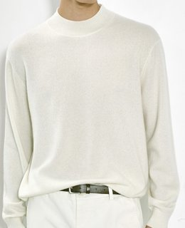
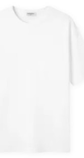
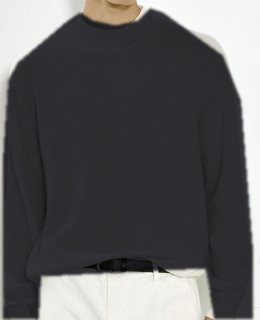
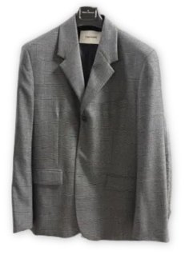
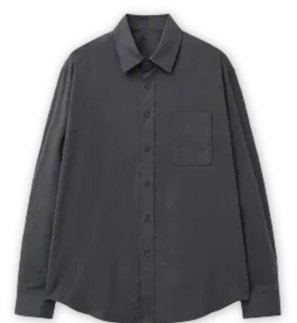
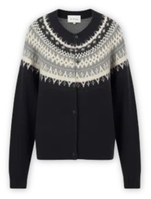
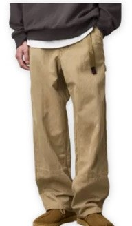
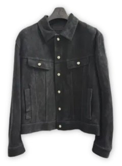
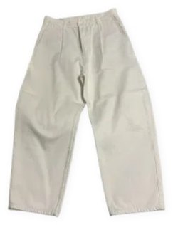
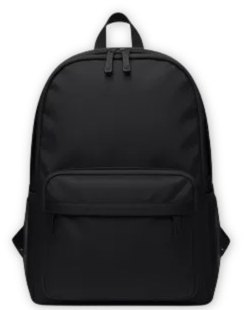

추위가 풀려 낮엔 16°까지 오르지만 아침은 5°라 일교차가 11°예요. 두꺼운 코트 대신 가벼운 재킷에 니트를 겹쳐 낮엔 하나씩 벗을 수 있게 입고, 오전엔 빗방울이 살짝 떨어질 수 있어요. 사진 촬영이 있다고 알려주셔서 얼굴이 밝아 보이는 단정한 조합으로 직접 정했어요.
1 / 6
추천
더니트컴퍼니 크림 캐시미어 모크넥 니트 + IN SILENCE 차콜 싱글 블레이저
크림 니트가 얼굴을 밝히고 차콜 블레이저가 윤곽을 잡아주는 조합이에요. 셔츠와 타이 대신 모크넥을 재킷 안에 입는 방식은 요즘 프로필 사진에서 단정하면서도 딱딱하지 않게 보이는 대표 공식이에요. 낮 16°라 코트 없이 블레이저만으로 충분해요.
블레이저IN SILENCE 차콜 싱글 블레이저
IN SILENCE 차콜 싱글 블레이저예요. 어깨선이 또렷해 사진에서 상체가 정돈돼 보여요.

니트더니트컴퍼니 크림 캐시미어 모크넥 니트
더니트컴퍼니 크림 캐시미어 모크넥 니트예요. 목이 올라와 셔츠 없이도 단정해요.

반팔 티셔츠ZAVANAS 화이트 반팔 티셔츠
ZAVANAS 화이트 반팔 티셔츠를 안에 받쳐 입어요. 니트가 얇아서 비침을 막아줘요.
정장바지블랭크룸 차콜 투턱 정장바지
블랭크룸 차콜 투턱 정장바지로 블레이저와 색을 맞춰 한 벌처럼 보이게 해요.
로퍼로스트가든 블랙 레더 로퍼
로스트가든 블랙 레더 로퍼예요.
숄더백르메르 블랙 호보 숄더백
르메르 블랙 호보 숄더백이에요.
대안
더니트컴퍼니 블랙 캐시미어 모크넥 니트 + IN SILENCE 차콜 싱글 블레이저
새로 온 블랙 모크넥으로 톤을 낮춘 버전이에요. 블랙과 차콜만 써서 차분하고 도회적인 인상이 되고, 얼굴 윤곽이 또렷하게 나와요.
블레이저IN SILENCE 차콜 싱글 블레이저
IN SILENCE 차콜 싱글 블레이저예요.

니트더니트컴퍼니 블랙 캐시미어 모크넥 니트
더니트컴퍼니 블랙 캐시미어 모크넥 니트예요. 재킷 안에서 목선을 깔끔하게 잡아줘요.
반팔 티셔츠ZAVANAS 화이트 반팔 티셔츠
ZAVANAS 화이트 반팔 티셔츠를 안에 받쳐 입어요. 목 밖으로는 보이지 않게 해요.
정장바지블랭크룸 차콜 투턱 정장바지
블랭크룸 차콜 투턱 정장바지예요.
로퍼로스트가든 블랙 레더 로퍼
로스트가든 블랙 레더 로퍼예요.
숄더백르메르 블랙 호보 숄더백
르메르 블랙 호보 숄더백이에요.
대안
더니트컴퍼니 그레이 캐시미어 모크넥 니트 + TONYWACK 그레이 글렌체크 블레이저
그레이 니트에 그레이 체크 블레이저를 겹친 톤온톤이에요. 체크가 잔잔해 밋밋하지 않고, 크림이나 블랙보다 부드러운 인상을 줘요.

블레이저TONYWACK 그레이 글렌체크 블레이저
TONYWACK 그레이 글렌체크 블레이저예요. 무늬가 들어간 유일한 옷이에요.
니트더니트컴퍼니 그레이 캐시미어 모크넥 니트
더니트컴퍼니 그레이 캐시미어 모크넥 니트예요. 블레이저와 색을 이어요.
반팔 티셔츠ZAVANAS 화이트 반팔 티셔츠
ZAVANAS 화이트 반팔 티셔츠를 안에 받쳐 입어요.
정장바지유스 블랙 투턱 정장바지
유스 블랙 투턱 정장바지로 아래를 눌러줘요.
로퍼HARUTA 블랙 페니 로퍼
HARUTA 블랙 페니 로퍼예요.
크로스백생로랑 블랙 나일론 크로스백
생로랑 블랙 나일론 크로스백이에요.
옷장 자동 조합
노이어 차콜 셔츠 + ART IF ACTS 블랙 노르딕 가디건
같은 날씨와 격식 기준(무채색 위주, 포인트 컬러는 하나까지)으로 옷장에서 자동으로 고른 조합이에요.

셔츠노이어 차콜 셔츠

가디건ART IF ACTS 블랙 노르딕 가디건

긴바지그라미치 베이지 와이드 긴바지
스니커즈BALENCIAGA 그레이 러닝 스니커즈
숄더백르메르 블랙 호보 숄더백
옷장 자동 조합
ART IF ACTS 라이트그레이 링거 긴팔 티 + NOIR LARMES 블랙 스웨이드 재킷
같은 날씨와 격식 기준(무채색 위주, 포인트 컬러는 하나까지)으로 옷장에서 자동으로 고른 조합이에요.
긴팔 티ART IF ACTS 라이트그레이 링거 긴팔 티

재킷NOIR LARMES 블랙 스웨이드 재킷

긴바지ART IF ACTS 아이보리 와이드 긴바지
스니커즈BALENCIAGA 그레이 러닝 스니커즈

백팩YOUTH 블랙 백팩
옷장 자동 조합
ZAVANAS 블랙 긴팔 티 + TONYWACK 블랙 스웨이드 재킷
같은 날씨와 격식 기준(무채색 위주, 포인트 컬러는 하나까지)으로 옷장에서 자동으로 고른 조합이에요.

 블레이저IN SILENCE 차콜 싱글 블레이저
블레이저IN SILENCE 차콜 싱글 블레이저 정장바지블랭크룸 차콜 투턱 정장바지
정장바지블랭크룸 차콜 투턱 정장바지 로퍼로스트가든 블랙 레더 로퍼
로퍼로스트가든 블랙 레더 로퍼 숄더백르메르 블랙 호보 숄더백
숄더백르메르 블랙 호보 숄더백